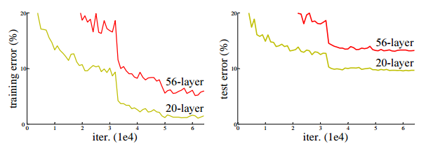

Khó khăn trong huấn luyện mô hình lớn
Ta biết rằng, việc tạo ra các mô hình có độ sâu lớn (nhiều layer) chưa chắc đã mang lại hiệu quả tốt hơn những mô hình “cạn” hơn. Ví dụ, với tập CIFAR10 thì ta có một kết quả thử nghiệm cho thấy rằng mô hình sâu hơn lại có độ hiệu quả kém hơn:

Đối với việc huấn luyện các mô hình có độ sâu lớn thì ta có thể sẽ bị gặp phải các vấn đề sau:
- Overfitting: Mô hình càng sâu thường sẽ càng phức tạp nên nó rất dễ bị overfitting.
- Vanishing/exploding gradient: Vấn đề này thì ta đã có một số cách giải quyết phổ biến như thay đổi activation function, các phương pháp khởi tạo trọng số như He Initialization.
- Trong He Initialization, tại mỗi layer thì ta khởi tạo các giá trị bias với gái trị 0, các trọng số sẽ tuân theo phân phối chuẩn với kỳ vọng 0, phương sai $\dfrac{2}{D_h}$, trong đó $D_h$ là số units của layer liền trước layer hiện tại.
Ngoài 2 vấn đề trên, ta có một vấn đề đặc biệt hơn là degradation: Accuracy tăng dần cho đến một độ sâu nhất định thì ngừng tăng (bão hòa) rồi sau đó sẽ giảm dần.
Lưu ý rằng, nhiều trường hợp degradation không phải do overfitting gây ra. Khi mô hình có độ phức tạp đủ lớn, những sự thay đổi dù là rất nhỏ trong trọng số cũng sẽ gây ra sự biến thiên lớn trong giá trị của gradient, điều này dẫn đến các bước cập nhật trọng số qua những lần chạy gradient descent sẽ không mang lại lợi ích gì nhiều mà còn có thể khiến quá trình huấn luyện “đi lạc”.
Sự biến thiên của gradient khi trọng số thay đổi trong các mô hình
(a) Mô hình chỉ có 1 hidden layer; (b) Mô hình có độ sâu lớn với 24 hidden layers
Nguồn: Understanding Deep Learning - Simon J.D. Prince
Degradation cho chúng ta thấy rằng việc tối ưu các mô hình có độ sâu lớn là không hề dễ dàng. Trong quá trình xây dựng mô hình, từ một mô hình ban đầu, sau khi thêm một số layer vào thì tất nhiên là ta mong rằng mô hình mới phải có độ hiệu quả ít nhất là ngang mô hình gốc. Tuy nhiên, khi xảy ra degradation thì mong muốn đó đã không thể thành sự thật được. 😀
ResNet được công bố nhằm giải quyết vấn đề degradation đối với các mô hình có độ sâu lớn. Khi nhắc đến ResNet thì ta sẽ lập tức nghĩ đến những mô hình với độ sâu rất khủng, thậm chỉ là lên đến 100, 200 layer.
Hàm phần dư và skip connection
Ý tưởng về hàm phần dư
Nhắc lại về cái mong muốn ở phần trước, rằng mô hình mới phải có độ hiệu quả ít nhất là ngang mô hình gốc, ta có thể nghĩ ngay đến một phương pháp cực kì đơn giản: các layer phía sau sẽ là identity mapping, tức là input và output của nó sẽ giống nhau. Với cách làm này thì hiển nhiên là ta đạt được mong muốn rồi, vì độ hiệu quả của mô hình mới và mô hình gốc rõ ràng sẽ y hệt nhau.
- Tuy nhiên, nếu chỉ dừng lại ở đó thôi thì thêm layer vào làm gì :v Ta muốn đạt được kết quả tốt hơn!
Các tác giả của paper ResNet giới thiệu một phương pháp gọi là deep residual learning (học phần dư).
-
Giả sử ta có một block $B$ các layer, input của nó là $\bold{x}$. Với một mô hình thông thường, ta sẽ “học” một hàm số đầu ra mong muốn là $f(\bold{x})$. Lúc này, ban đầu thì ta hoàn toàn chưa có một thông tin gì về $f(\bold{x})$ cả, việc “học” sẽ xuất phát từ một đại lượng ngẫu nhiên.
-
Đối với phương pháp deep residual learning, output của block $B$ sẽ có dạng
$$h(\bold{x}) = \bold{x} + f(\bold{x})$$
và ta sẽ đi học $f(\bold{x})$. Lúc này, $f(\bold{x})$ được gọi là residual function (hàm phần dư)
-
Ta có các nhận xét sau:
- Trong deep residual learning, ta đã có sự “gợi ý” cho hàm mong muốn thông qua giá trị input $\bold{x}$. Đối với thông thường thì không có sự gợi ý nào được đưa ra cả.
- Việc học $f(\bold{x})$ như là một hàm phần dư là dễ hơn so với việc học hàm mong muốn. Nếu identity mapping là kết quả tối ưu thì ta có luôn $f(\bold{x})=0$
- Về mặt bản chất, với phương pháp deep residual learning, ta đã tác động vào lớp hàm chứa hàm mong muốn, sao cho lớp mới là lớn hơn (bao gồm) lớp cũ.
Nguồn: Dive into DL
{kind=link}
Để minh họa cho yếu tố “giúp việc học trở nên dễ hơn”, ta có ví dụ như sau:
Đồ thị của loss function cũng "trơn" hơn rất nhiều khi có sử dụng skip connection, từ đó ta sẽ dễ huấn luyện mô hình hơn
Nguồn: Jeremy Jordan
{kind=link}
Skip connection
Như vậy, điểm nhấn của ResNet là ta đi học các hàm phần dư, thông qua việc “gợi ý” cho hàm số mong muốn một giá trị bằng với chính giá trị input ban đầu. Trong cài đặt, thao tác này được thực hiện thông qua một kết nối gọi là skip connection. Ta sẽ cộng input $\bold{x}$ vào output của block thông thường.
- Đối với việc cộng như vậy thì thực chất là ta đang đi cộng hai ma trận. Khi đó, một vấn đề có thể nảy sinh là về shape của chúng, mà thường là số channel. Nếu số channel không khớp thì ta cần phải tiến hành “điều chỉnh”.
- Vì các block được sử dụng thường gồm các conv layer với stride và padding phù hợp để giữ nguyên width và height nên ta sẽ chỉ xét đến số channel.
- Nếu số channel của $\bold{x}$ và output ban đầu là như nhau thì ta gọi skip connection này là identity skip connection.
- Ngược lại, ta sẽ dùng conv layer $1 \times 1$ để điều chỉnh số channel của $\bold{x}$. Lúc này, skip connection được gọi là projection skip connection.
Sử dụng skip connection (identity)
Nguồn: Dive into DL
{kind=link}
Ngoài ra, ta còn có một điểm mạnh quan trọng của skip connection là nó giúp cho gradient được lan truyền tốt hơn trong quá trình backpropagation, từ đó góp phần làm giảm hiện tượng vanishing gradient.
- Quan sát hình phía trên, ta thấy rằng khi backpropagation thì layer ở ngay trước block nhận được gradient từ hai layer phía sau nó (một layer liền trước nó và một layer được kết nối thông qua skip connection).
Vấn đề exploding gradient
Như mình đã đề cập ở đầu bài viết, với các mô hình có độ sâu lớn thì hai vấn đề đối với gradient mà ta thường gặp là vanishing và exploding. Đầu tiên, ta có những cách khởi tạo trọng số để hạn chế các vấn đề này như He Initialization. Ngoài ra, với vanishing thì cũng đã được phần nào hạn chế đi bằng skip connection. Tuy nhiên, nếu dùng He Initialization cùng với skip connection thì skip connection lại có khả năng gây ra exploding gradient 😃
Lý do của điều này nằm ở thao tác cộng giá trị $\bold{x}$ với giá trị tính được của hàm $f(\bold{x})$. Ta hoàn toàn có thể xem $\bold{x}$ và $f(\bold{x})$ là hai biến ngẫu nhiên độc lập, khi đó
$$\text{var}(\bold{x} + f(\bold{x})) = \text{var} (\bold{x}) + \text{var} (f(\bold{x}))$$
Hơn nữa, khi ta dùng ReLU và He Initialization thì $\text{var}(f(\bold{x})) = \text{var}(\bold{x})$. Do đó, có thể nói là ta đã làm cho phương sai của input $\bold{x}$ tăng gấp đôi sau khi đi qua một block có dùng skip connection. Như vậy, khi dần qua nhiều block thì phương sai sẽ cứ tăng lên theo số mũ 2 và có thể dẫn đến hiện tượng exploding gradient.
Để hạn chế vấn đề exploding như trên, ta có hai cách phổ biến:
- Sau khi tính xong $h(\bold{x}) = \bold{x} + f(\bold{x})$ thì ta sẽ scale $h(\bold{x})$ bằng cách nhân nó với $\dfrac{1}{\sqrt{2}}$.
- Sử dụng Batch Normalization với hai trọng số $(\gamma, \delta) = (1, 0)$ để chuẩn hóa $\bold{x}$ trước khi tính $f(\bold{x})$ (không thay đổi giá trị $\bold{x}$ gốc vì giá trị gốc sẽ được sử dụng cho phép cộng ở sau. Bằng cách này, kết hợp với He Initialization thì $f(\bold{x})$ cũng sẽ có phương sai là 1. Từ đó, phương sai của tổng $h(\bold{x})$ sẽ chỉ tăng tuyến tính theo số lượng block được sử dụng.
Minh họa hai cách hạn chế exploding trong skip connection
Nguồn: Understanding Deep Learning - Simon J.D. Prince
Cách giải quyết số 2 được các tác giả sử dụng trong kiến trúc của ResNet. Đây là lý do ta thấy các layer Batch Normalization được sử dụng trong residual block ở phần tiếp theo.
Residual block
Các loại residual block
Residual block (khối phần dư) được tạo ra bằng cách thêm một skip connection vào một block thông thường trong các mô hình CNN như VGG block. Ta có hai loại residual block như sau:
- Basic: Các conv layer trong block này có filter $3 \times 3$. Block dạng này thường được dùng cho các mô hình có độ sâu vừa phải.
- Bottleneck: Nhằm giảm bớt số lượng tham số của các mô hình có độ sâu lớn, các tác giả sử dụng dạng block này với hai conv layer $1 \times 1$ với vai trò là giảm/tăng số channel, tạo ra một hình dáng giống như nút thắt cổ chai.
- Hai layer conv $1 \times 1$ như vậy được gọi là bottleneck layer. Để cho dễ hình dùng thì ta có thể xem đây như là thao tác “cô đọng kiến thức” của mô hình, hay nói rõ hơn là nén lượng thông tin lại sao cho vừa giữ được thông tin và vừa tiết kiệm tài nguyên (bộ nhớ, độ phức tạp tính toán).
Basic Residual Block và Bottleneck Residual Block
Ngoài ra, ta còn có 2 loại skip connection là identity và projection. Lúc này, tùy vào số channels của input và output ban đầu có khớp hay không mà block tương ứng sẽ chứa loại skip connection phù hợp.
Basic residual block với identity và projection skip connection
Nguồn: Dive into DL
{kind=link}
Thứ tự thực hiện các phép toán
Quan sát kỹ hình ảnh mô tả residual block ở phía trên, ta sẽ thấy rằng thao tác cộng input $\bold{x}$ và output của layer Batch Norm thứ hai (chính là $f(\bold{x})$) được thực hiện trước khi đi qua ReLU. Vì sao lại như thế?
Lý do rất đơn giản. Nếu ta đưa $f(\bold{x})$ qua ReLU trước rồi mới cộng vào $\bold{x}$ thì $\bold{x}$ đang được cộng với một lượng không âm. Cứ nhiều lần như thế thì giá trị model tích lũy được sẽ chỉ có tăng dần lên chứ không có giảm 😃 Điều này chắc chắn là không ổn và có thể khiến mô hình không thể học được đặc trưng gì có ích cả.
Kiến trúc ResNet
ResNet được tạo nên bằng cách sử dụng nhiều residual block liên tiếp nhau, tương tự như những gì mà GoogLeNet hay VGG đã thực hiện. Các tác giả của paper ResNet tạo ra nhiều phiên bản ResNet khác nhau với độ sâu tăng dần.
- Dựa vào số lượng layer có trọng số thì ta sẽ có tên các mô hình như ResNet18 (18 layer có trọng số), ResNet34,…
Các phiên bản ResNet
Ta có một số nhận xét như sau:
- Các phiên bản có độ sâu lớn như 50, 101 và 152 sử dụng Bottleneck Residual Block. Với 18 và 34 thì chúng dùng Basic block
- Trong các kiến trúc trên thì ta sử dụng cả 2 loại skip connection: identity và projection
- Ví dụ, với ResNet18 thì trong cụm Basic block đầu tiên của cụm conv3_x sẽ có số channel là 64, còn output ban đầu của block này thì là 128 nên ta phải áp dụng projection vào input
- Đối với height và width thì các tác giả cho biết việc downsampling input sẽ được thực hiện tại conv layer đầu tiên của các cụm conv3_x, conv4_x, conv5_x (với stride là 2). Các conv layer khác thì đều có stride 1. Ta sẽ cần chú ý đến chi tiết này khi tiến hành cài đặt ResNet.
Cài đặt
Các bạn có thể tham khảo phần cài đặt ResNet bằng Tensorflow và Pytorch tại repo sau.